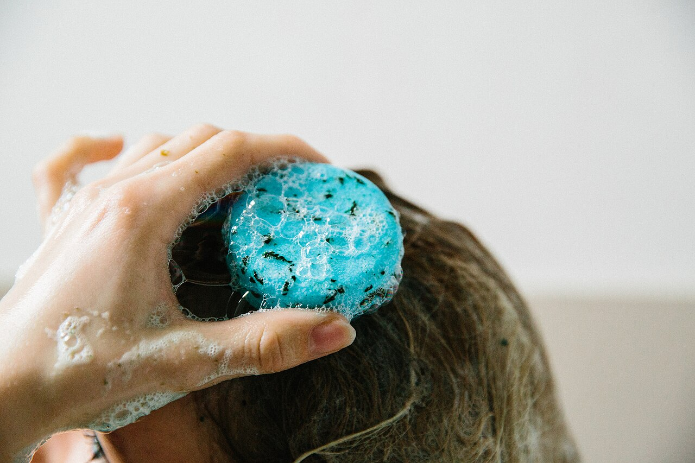

Cabello

Cabello
La fibra capilar es un material sin actividad biológica cuya superficie cambia de carga con el pH. Esta sección usa esa propiedad para explicar el depósito de acondicionadores y el diseño de champús.
Objetivos de aprendizaje
- Describir la cutícula y las consecuencias de su daño.
- Relacionar punto isoeléctrico, pH y adsorción de catiónicos.
- Explicar la coacervación en un champú y la red laminar en un acondicionador.
- Verificar el cumplimiento de límites expresados como activo.
Vocabulario
pH
Logaritmo negativo de la actividad del ion hidrógeno. A 25 °C, 7 es neutro; por debajo es ácido y por encima, alcalino. La piel ronda de 4 a 6.
Tensioactivo
Molécula con cabeza hidrófila y cola hidrófoba que reduce la tensión interfacial. Sodium Laureth Sulfate.
Aniónico
Tensioactivo con cabeza de carga negativa. Aporta detergencia y espuma. SLES.
Catiónico
Tensioactivo con cabeza de carga positiva. Se adsorbe en superficies negativas como el cabello. Cloruro de cetrimonio.
Anfótero
Tensioactivo cuya carga depende del pH. Se usa como cotensioactivo. Cocamidopropil betaína.
No iónico
Tensioactivo sin carga en la cabeza. Coco glucósido.
Materia activa
Fracción en masa del ingrediente comercial que corresponde al tensioactivo. SLES líquido: 27 %.
Curva de sal
Viscosidad en función de la concentración de electrolito. Presenta un máximo.
Queratina
Proteína estructural del cabello y del estrato córneo.
Cutícula
Capa de escamas superpuestas que cubre la fibra capilar.
Punto isoeléctrico
pH en que una superficie o molécula tiene carga neta nula. Cabello, cerca de 3.67.
Acondicionar
Reducir la fricción y la carga electrostática de la fibra.
Coacervado
Fase rica en polímero que se separa al diluir una mezcla de polímero y tensioactivo de carga opuesta.
Lección 1. Estructura de la fibra
El cabello es queratina organizada en corteza y cubierta por escamas superpuestas, la cutícula. La parte visible no se regenera. El roce, el calor y los tratamientos oxidantes levantan o desprenden escamas; aumentan la fricción, la electricidad estática y la dispersión de luz. Un acondicionador recubre y lubrica esa superficie (Gavazzoni Dias 2015).
Lección 2. Carga superficial
Con pH mayor que 3.67 la fibra tiene carga neta negativa. Los catiónicos se adsorben y orientan sus colas hacia afuera.
Cerca del punto isoeléctrico la carga neta se anula y la adsorción disminuye.
Al subir el pH aumentan los sitios negativos. Varíe el pH y observe.
El valor 3.67 procede de un grupo de autores (Gavazzoni Dias 2015). El cabello decolorado tiene un punto isoeléctrico menor, más sitios negativos y mayor adsorción de acondicionador.
En 123 champús comerciales el pH varió de 3.5 a 9.0 y solo 38 % tenía 5.5 o menos (Gavazzoni Dias et al. 2014). Un pH alto aumenta la carga negativa y con ella la repulsión entre fibras y la fricción.
Lección 3. Champú
| Componente | Activo (%) | Función |
|---|---|---|
| Aniónico | 8 a 10 | detergencia |
| Anfótero | 1 a 5 | suavidad, viscosidad |
| Polímero catiónico | 0.1 a 0.3 | depósito al enjuagar |
| NaCl | según curva | viscosidad |
| Conservante y ácido | según pH | protección y ajuste |
Los intervalos de tensioactivo siguen a Thompson y colaboradores (Thompson et al. 2023); el del polímero es una propuesta.
Coacervación. El polímero catiónico se asocia con las micelas aniónicas en un complejo soluble. Al enjuagar, la dilución lo saca de la zona soluble, se separa una fase rica en polímero y se deposita en la fibra.
Sulfatos. No hay datos publicados sobre daño capilar o poder limpiador de los champús sin sulfato que permitan afirmar una ventaja (Gavazzoni Dias 2015).
Ejemplo resuelto. 250 g de champú con 9 % de SLES a partir de un líquido al 27 %: 250 × 9/27 = 83.3 g.
Lección 4. Acondicionador
Un catiónico de cadena larga y un alcohol graso forman una red de gel laminar. El alcohol graso construye la bicapa y lubrica; el catiónico le da carga y la fija a la fibra.
| Función | Ejemplo | Contenido (%) |
|---|---|---|
| Alcohol graso | Cetyl o Stearyl Alcohol | 2.5 a 6.0 |
| Amidoamina | Stearamidopropyl Dimethylamine | 1.0 a 1.5 |
| Cuaternario | Distearyldimonium Chloride | 0.75 a 1.0 |
| Ácido | Citric Acid | 0.2 |
Los valores son del manual de Barel, Paye y Maibach (Barel et al. 2009, 690-91).
Neutralización. La amidoamina es una base sin carga. El ácido la protona y la convierte en catiónico, y por eso el producto queda a pH 4 a 4.5. La cantidad de ácido se fija con una titulación de la base, agregando ácido cítrico al 10 % y registrando el pH.
Incompatibilidad. La goma xantana es aniónica y precipita con el catiónico. Se espesa con alcohol graso o con hidroxietilcelulosa.
Evaluación. La fuerza de peinado en húmedo, medida con dinamómetro sobre mechones de la misma procedencia, compara tratamientos. Se asignan al azar y se trabaja con seis mechones por tratamiento como mínimo.
Lección 5. Límites reglamentarios
| Ingrediente | Con enjuague | Sin enjuague |
|---|---|---|
| Cetrimonium Chloride | 2.5 % | 1.0 % en cabello; 0.5 % en cara |
| Behentrimonium Chloride | 5.0 % | 3.0 % |
Son porcentajes de activo (CosIng 2026). El límite del cetrimonio incluye la suma con Steartrimonium Chloride.
Ejemplo resuelto. Cetrimonio comercial al 25 %, usado al 2.8 % en una crema sin enjuague: 0.25 × 2.8 = 0.70 % de activo, por debajo de 1.0 %.
Alcance de la evidencia
El punto isoeléctrico y la distribución de pH vienen de un mismo grupo. Los porcentajes de mascarilla, crema para peinar y gel fijador son propuestas sin ensayo.
Productos de esta sección
Autoevaluación
Referencias
Sobre la sustantividad de los catiónicos, véase también Benson y colaboradores (2019, 157).